這天來到雲林虎尾林森路上的提米可可。 對面是間寶雅，路上的二旁都是店家，車流量也多。 但來時可能要稍注意一下，不至於難找。
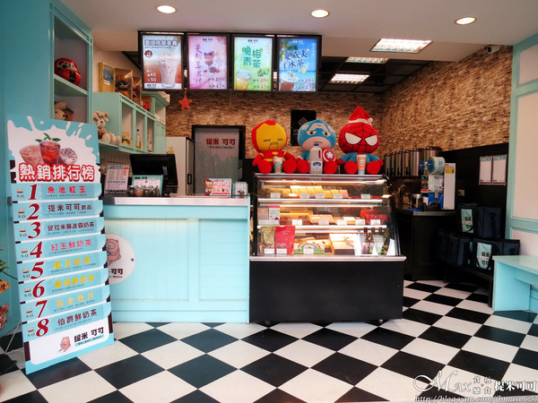 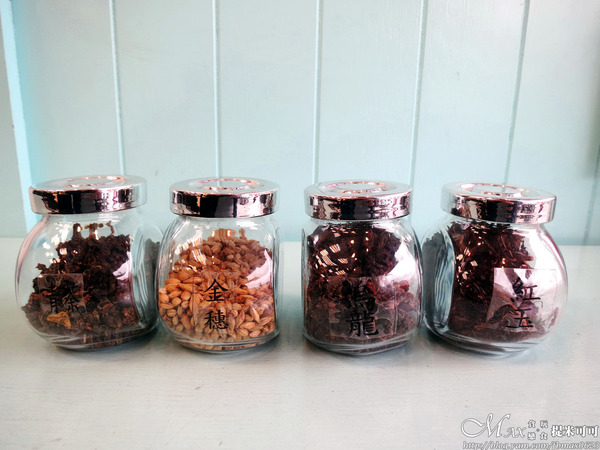 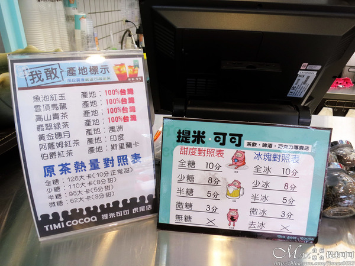因食安問題多的關係，現今店家都會將所使用的茶葉放置在點餐處讓客人看到。 巧克力雲莊在厄瓜多有契作的可可田，製作巧克力的可可豆都是產地直送。 茶方面多選用南投在地100%台灣且不含香精不混越南茶葉，也有少部份是進口的。 現在的人最喜歡如此透明化，吃的到，喝的到，看的到，才會放心。
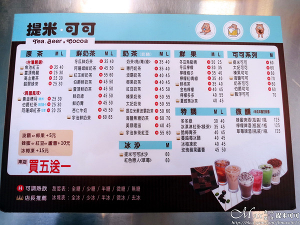MENU有原茶、鮮奶茶、奶茶、鮮果、特調、冰沙、可可系列和微醺。 有標示皇冠的圖案都是店長推薦，現在來店有買5送1。
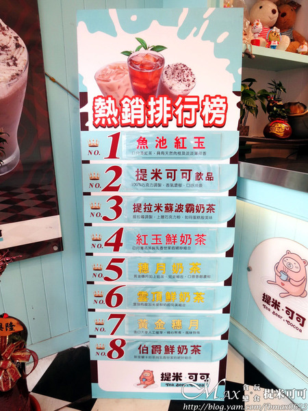如真的還不知點什麼，一旁也有熱銷排榜可供參考。 名次會隨季節改變而所有不同，但跟著點準沒錯，比較穩健一點。 為了要介紹給大家，所以就請店家先不封膜，照片拍的有點匆忙XD
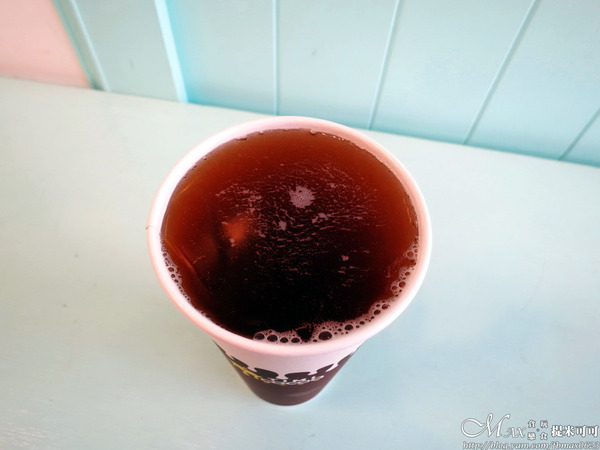之前曾來過多次，每次都喝穗月奶茶，那獨特的香氣深得我心。 黃金穗月是從澳洲進口的大麥，主是要釀啤酒用。 麥芽香風味很迷人，愈喝會回甘，好喝耶！
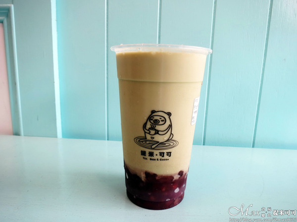底下搭配的是屏東的紅豆，煮得熟透，粒粒分明。 抹茶的味道與香甜的紅豆，可以這麼對味，不知不覺就喝光了...
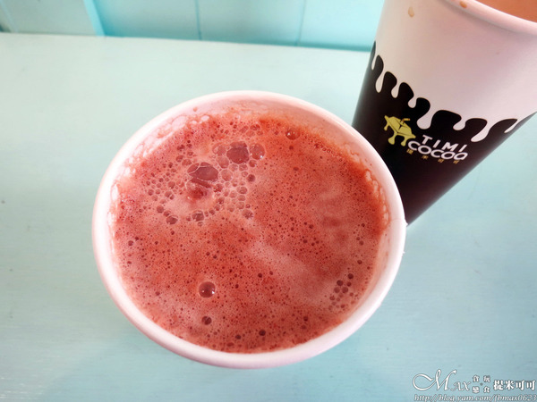提米可可和冰沙系列一律只有中杯量。 用的是巧克力雲莊100%的頂級可可粉加上鮮奶特調。 不知是否注意到上面多了奶泡，是特別用均質機打的。 巧克力香醇濃郁，微帶苦甜的滋味，多了奶泡的細膩層次感。 在這冬天來上一杯好溫暖，幸福感油然而生。
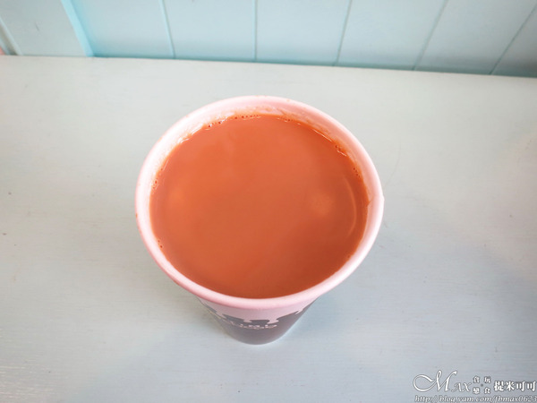斯里蘭卡的伯爵紅茶與鮮奶調配過。 剛入口伯爵特有的佛手柑味很明顯，曾喝過某些店家完全沒味道。 到後來奶香慢慢散出來，融合的很完美。 佛手柑的味道不是每個人都可以接受，但我很喜歡。
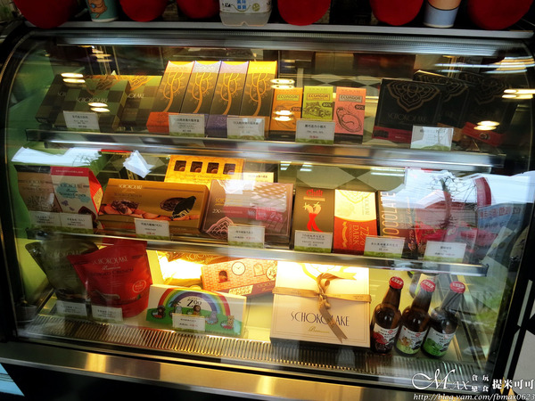 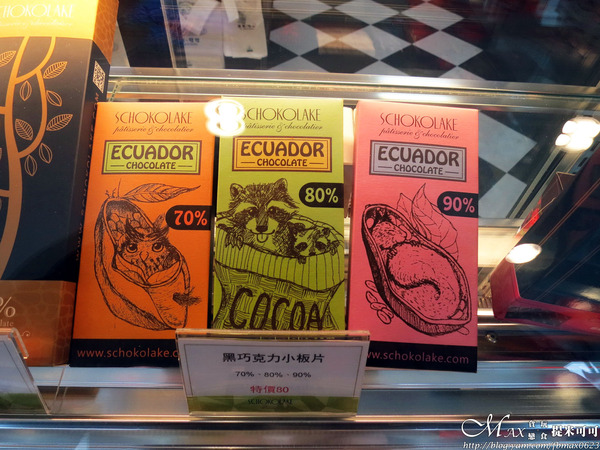冷藏櫃內有販售巧克力雲莊的巧克力相關產品。 包裝方面都很精美，送禮自用兩相宜。 有吃過中間72%巧克力，是玫瑰鹽的口味。 巧克力濃郁沒這麼甜，微帶玫瑰鹽的氣味，很涮嘴說。
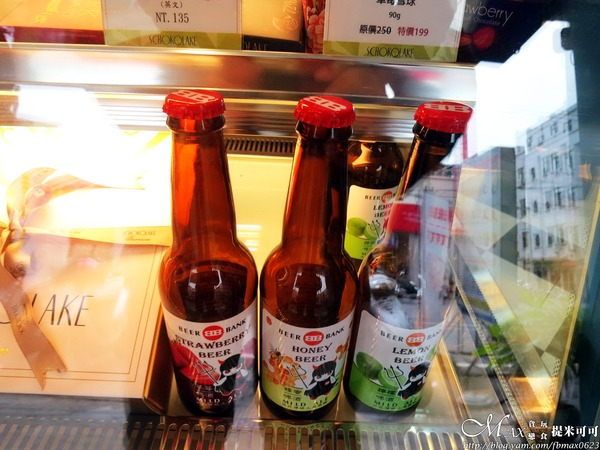最後這款Beer Bank也是屬巧克力雲莊，莊園限定的。 有草莓、蜂蜜和檸檬口味的啤酒。 幾位朋友喝過，都滿推薦，愛微醺的朋友別錯過。
引自:http://blog.yam.com/fbmax0623/article/121207043